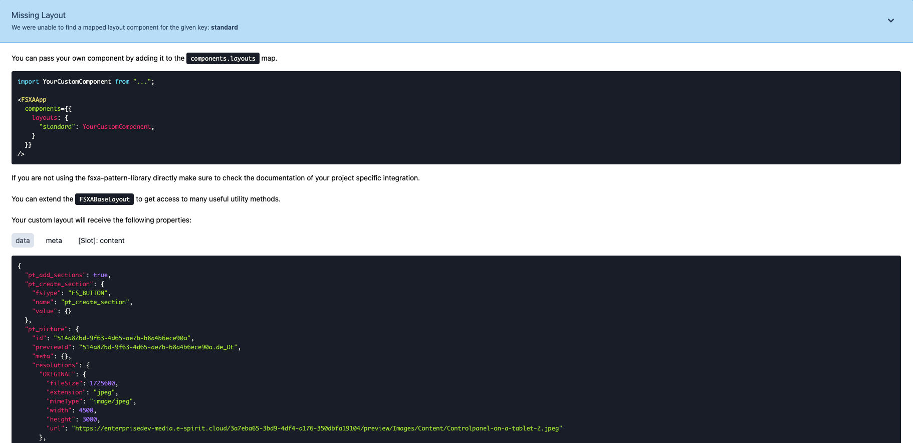

My First Template
This chapter describes how to set up the project and complete the first steps.
Setting up the Project
-
Open the terminal and if needed, navigate to your preferred directory where the project should be saved.
-
Clone the project using the terminal command
git clone https://github.com/e-Spirit/fsxa-pwa.git. The project should be downloaded into a folder calledfsxa-pwa. -
Navigate to the newly created folder with
cd fsxa-pwa. -
Copy the existing
.env.templatefile and paste it with the new name.envor simply run the commandcp .env.template .env. -
The .env file must contain all the information you need to access your own system. You can get this information from your contact at e-Spirit AG. By default, this file is located in the
.gitignoreand is therefore not persisted. Each required attribute is explained briefly, for a more detailed description please check the configuration page. -
To install the needed dependencies run the command
npm install. -
After all dependencies are installed, you can start a local development server with
npm run dev. -
After the server is started, it can be accessed at http://localhost:3000 in your browser.
Development Mode
There is a development mode that helps to easily map the content coming from the CaaS.
To enable the development mode, the variable devMode must be set to true in the fsxa.config.ts file. Be aware that you have to restart the server when you change anything in this file. This file is also checked into git. So be sure to change the variable back to false before deploying to production.
If you are in development mode and a component on the page has not been developed yet, you will get an info box which shows exactly which component is missing and what information in the component can be addressed.

If you are in development mode and you have already implemented the component, then you will see question marks when hovering over the element.

Clicking on this question mark will provide you with more information about which component is being displayed and what data is available.
Writing Components
Depending on the language you choose to implement your first Component we have provided two guides to get you started.
If you prefer the classic vue single file component style this guide is for you.
If you come from react and are already familiar with JSX/TSX or you are curious and would like to get started with it this guide is for you.